五子棋常见思考方法
首页
江苏五子棋
#1 五子棋常见思考方法 作者：江南新绿 发表时间：2008-9-13 13:45:52
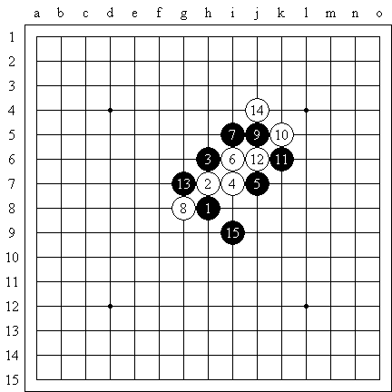
方法1：两头蛇 ，欢迎大家不断补充。
#2 Re:五子棋常见思考方法 作者：江南新绿 发表时间：2008-9-13 13:52:52
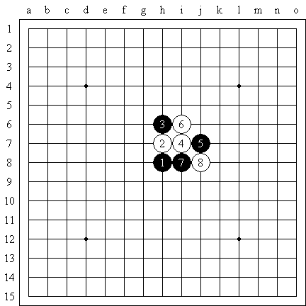
黑先胜方法２： 避免重复。
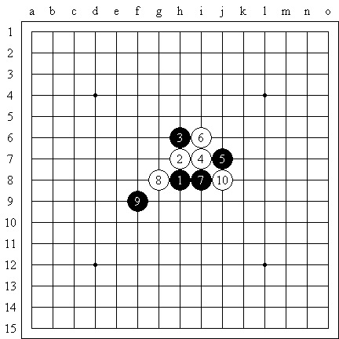
参考图：白１０重复防守，显得没有效率，同样，如果黑９先占住此点，那么白棋就不能同型。
充分调动对手总是不错的想法。
#3 Re:五子棋常见思考方法 作者：一期一会 发表时间：2008-9-13 13:55:28
发哥改行下五子棋了
#4 Re:Re:五子棋常见思考方法 作者：江南新绿 发表时间：2008-9-13 13:58:58
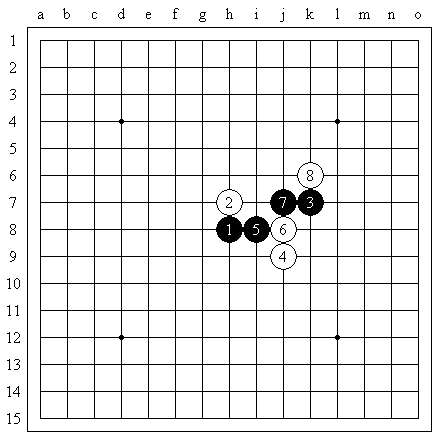
方法３：避免产生孤棋。
由于黑棋未来的行棋方向向左，那么３和７就是孤棋，换个７是不错的想法
#5 Re:Re:Re:五子棋常见思考方法 作者：江南新绿 发表时间：2008-9-13 14:03:34
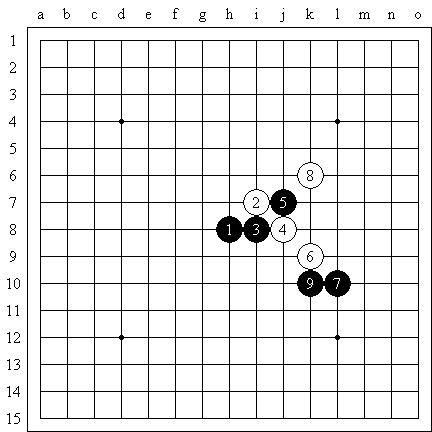
困难的情况下尽量要和自己的棋子保持联系。
黑９如果走其他都容易陷入被动，通过激战来转化也是一种思路。
#6 Re:Re:Re:Re:五子棋常见思考方法 作者：江南新绿 发表时间：2008-9-13 14:07:26
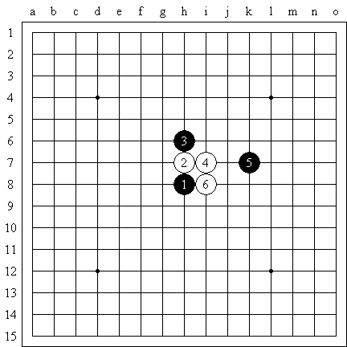
感觉和计算同样重要，避免感觉错误的方法就是算一算，如图黑５必败。
如果黑５在左边ｆ７就是黑不弱的棋。
#7 Re:Re:Re:Re:Re:五子棋常见思考方法 作者：江南新绿 发表时间：2008-9-13 14:18:28
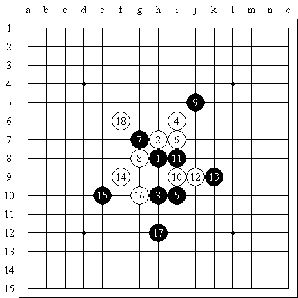
连续进攻是定型的最佳方法，如图１８造成一些很多反击的迷雾，但黑棋坚定的走下去，白棋也没有什么东西。王阳明说过，此心不动，随机而动。
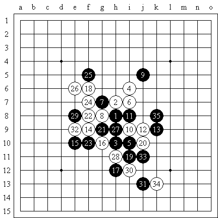
参考图，黑棋通过连续进攻一系列的手段迫使白棋定型，３５黑棋进入中局。
#8 Re:Re:Re:Re:Re:Re:五子棋常见思考方法 作者：江南新绿 发表时间：2008-9-13 14:25:39
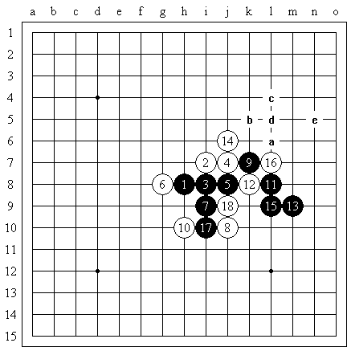
看清楚对方的计划再行棋，远比追求自己的棋型来的重要。
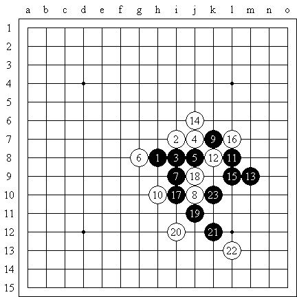
参考图，黑棋看似走的猥琐，但有效的避免了白棋的追胜。
#9 五子棋常见思考方法 作者：江南新绿 发表时间：2008-9-13 14:30:35
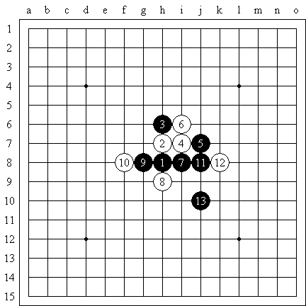
追胜是常见的方法，虽然位置比下图略差，但追一下总是好的。
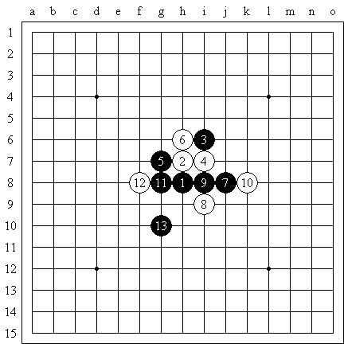
#10 Re:五子棋常见思考方法 作者：茗弈小刀 发表时间：2009-1-30 14:54:11
很感谢新绿老师！从中学到很多东西。
#11 换个方向试试 作者：江南新绿 发表时间：2009-2-8 11:31:21
=======上图对应的爱五子棋谱代码如下，以便你拆解：========
h8i9i8h7g9g8j7i6f9h9f10e11i10
======================================================13手有两个方向都可以挡住白棋的2，但只有一个是对的。所有当一个走法不通的时候不妨试试另一个。此图13正确。
=======上图对应的爱五子棋谱代码如下，以便你拆解：========
h8i9h6h9i7j8k7j6j7h7g9g8f7i10f8f9i6i12i8i5g4h5f6f4
======================================================如图黑棋13也有两个方向可以挡住白棋的2，但此图13错误。14白棋占据上方后，黑棋杀不出就非常被动。
=======上图对应的爱五子棋谱代码如下，以便你拆解：========
h8i9h6h9i7j8k7j6j7h7g9g8i10i6f9f10e7f8
======================================================如图黑棋13换了个方向，但是15，17都是选择题，15正确，黑棋局部扩大势力，17直接左下，但无杀。是不是可以换个方向呢？不是左下，该是？？
#12 Re:换个方向试试 作者：江南新绿 发表时间：2009-5-4 11:06:04
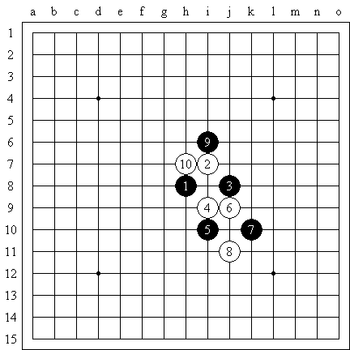
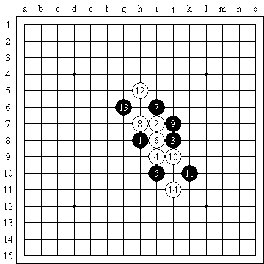
对称的美感和黄金分割
#13 Re:换个方向试试 作者：黄药师 发表时间：2009-5-5 0:01:51
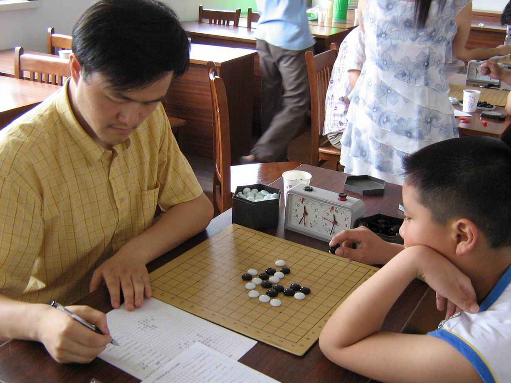
虽然只见过一次江南大哥，但是江南大哥的儒家风采给我很深的印象！
发个虐待小朋友的！
=======上图对应的爱五子棋谱代码如下，以便你拆解：========
h8g8h9i9j7h6j6i8i7k5k7l7i10h11l8i5g7h7k8j5
====================================================== ［ 二十七刀 于 2009-5-5 6:58:46 时花20金币送鲜花一朵］
#14 Re:五子棋常见思考方法 作者：江南新绿 发表时间：2009-6-2 9:12:43
现在只能虐虐小朋友了。。。